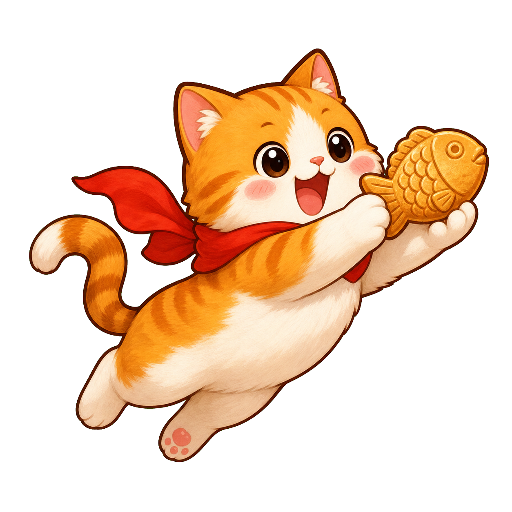
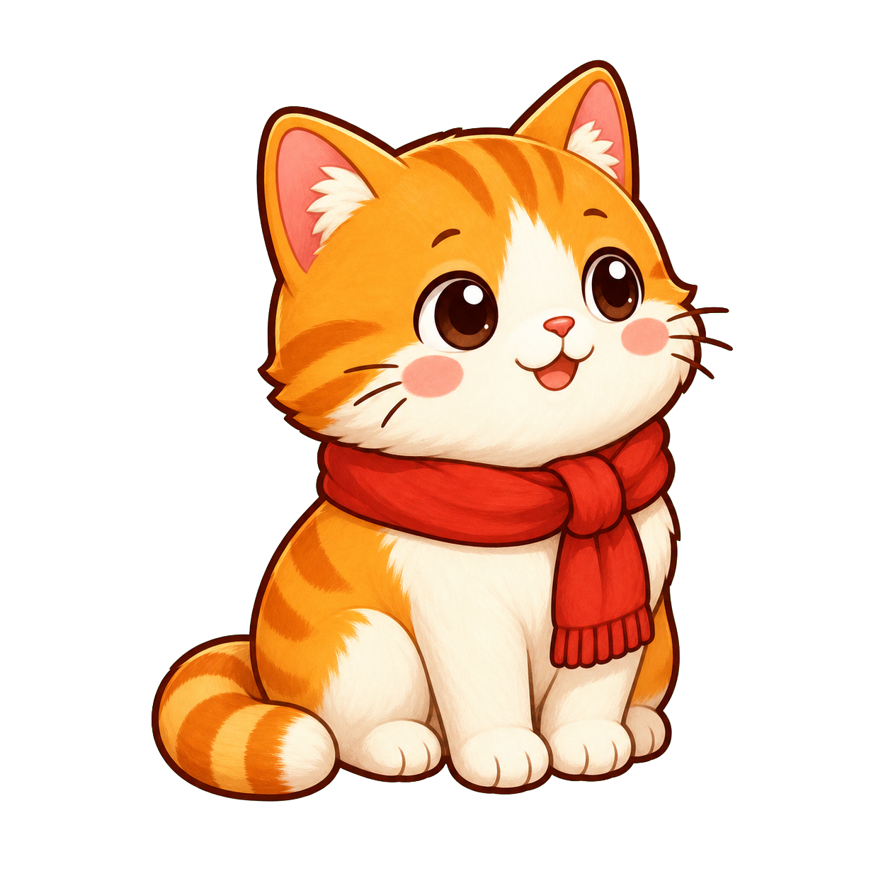

Mobile Game MVP
냥붕비
냥붕비
개발 과정
붕어빵 주문 게임이 고양이 점프 캐치 게임으로 발전한 흐름

붕어빵 주문 게임이 고양이 점프 캐치 게임으로 발전한 흐름


게이지 타이밍 방식으로 MVP 구현
회전식 붕어빵 기계 아이디어 반영
고양이가 붕어빵을 잡는 액션 게임으로 전환
cat-sit.png
대기 상태
cat-jump.png
점프 상태
플레이 루프를 먼저 단단히 만들고, 캐릭터와 붕어빵 에셋을 차례로 교체합니다.